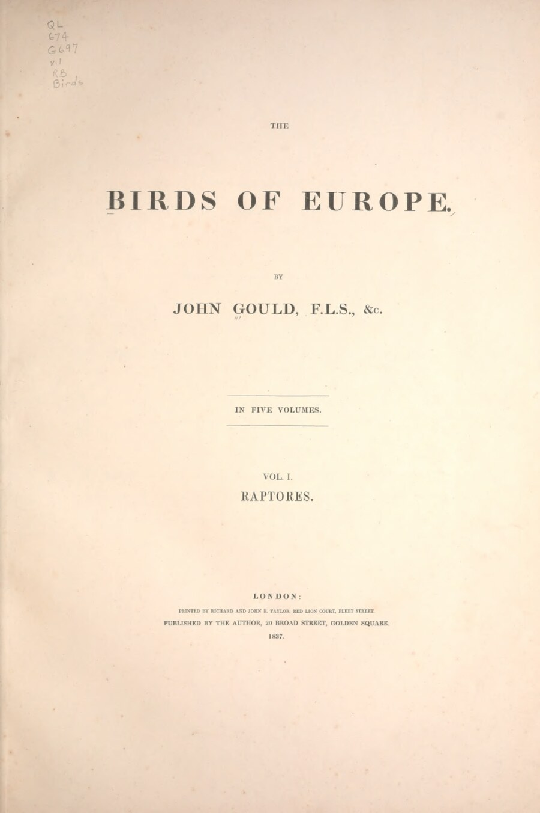
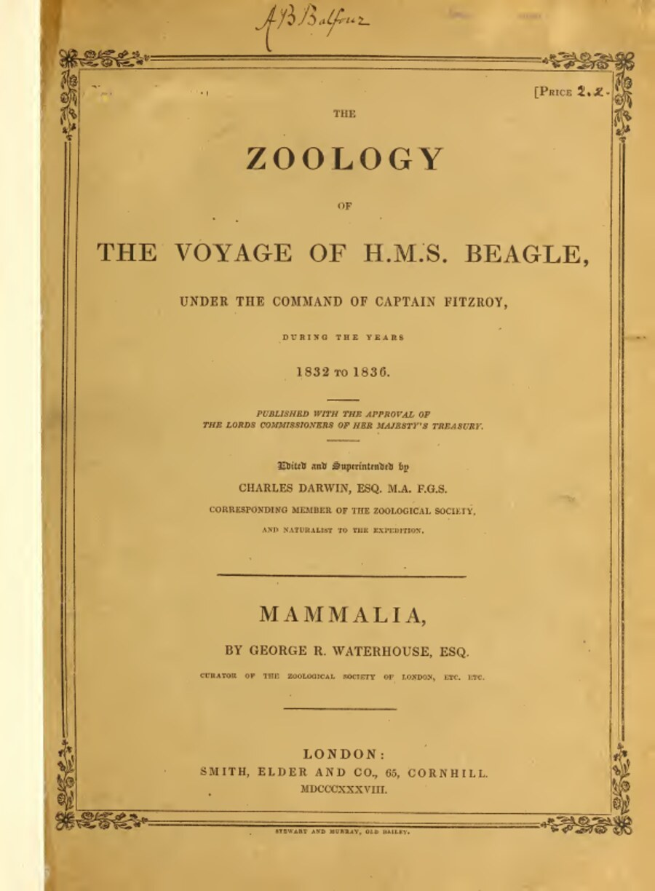
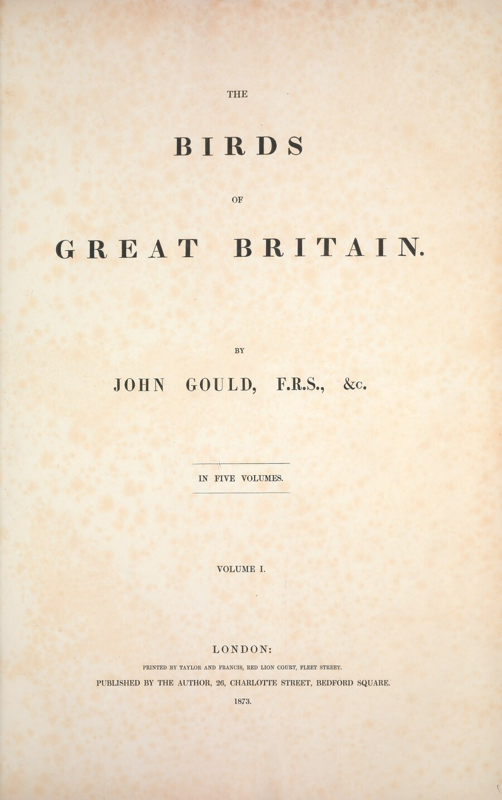

The Birds of Europe
Gould’s first major independent folio, and the book that made his reputation and his fortune. Most of the lithographs were drawn by Elizabeth Gould from her husband’s rough sketches and the specimens in his collection, with a handful of plates in the early parts contributed by the young Edward Lear.
The world in 1832–1837 — read the era →
This was still, just barely, a pre-photographic, pre-Darwinian world. Ornithology’s working reference was Coenraad Jacob Temminck’s Manuel d’Ornithologie, the Dutch systematist’s attempt to bring order to a Continent’s worth of competing regional bird books; in Britain, Bewick’s woodcut History of British Birds (1797/1804) was still the household standard, and William Yarrell’s own History of British Birds would not begin appearing until 1837, just as this set was finishing. Gould was, in these same years, essentially inventing a new format — large hand-coloured lithographic folios, produced at speed by a small workshop rather than a single obsessive engraver — and Elizabeth’s draughtsmanship, learned partly from Lear, was central to making it work.
Britain in 1832 had just passed the Great Reform Act and was five years into the railway age proper (the Liverpool & Manchester line opened in 1830); the countryside Gould catalogued was, for the first time, sharing cultural space with the smoking factory town, and the Romantic movement’s hunger for unspoiled, sublime nature — in Turner and Constable's painting, in the closing years of Wordsworth's career — runs in an obvious current beneath these plates. It is also, not coincidentally, the exact moment Charles Darwin sailed on the Beagle (1831–36); European natural history and the age of survey expeditions were at their joint high-water mark, feeding one another specimens, prestige, and readers.
Musically this is Chopin newly arrived in Paris and Mendelssohn at his most productive; in letters and library shelves the standing giants were still eighteenth-century in origin — Linnaeus’s binomial system (1758), Buffon’s vast Histoire Naturelle, Thomas Pennant’s British Zoology, and Gilbert White’s Natural History of Selborne (1789), the gentle parish-priest classic that had all but invented the English parson-naturalist as a type. Gould’s own reputation, still being built here, would within a decade or two make his workshop’s output the standard against which the rest of Europe measured its own bird books, rather than the other way around.

Birds of the Beagle
The bird volume of the official government-sponsored report on Darwin’s specimens, with the birds themselves identified and classified by Gould. It was Gould who first recognised that the Galápagos finches Darwin brought home were a closely related group of distinct species, not simply varieties — a judgement that fed directly into Darwin’s developing thinking about the origin of species.
The world in 1832–1841 — read the era →
The voyage (1831–36) is arguably the single most consequential scientific expedition in the historical record, and this slim volume of bird descriptions is one of its direct products. Darwin sailed as an unpaid gentleman naturalist under Captain Robert FitzRoy on a Royal Navy survey commission — part of a wider age of survey voyages that would soon include Ross’s Antarctic expeditions (1839–43). His own account of the journey, published in 1839 as the Journal of Researches (later retitled The Voyage of the Beagle), became a literary sensation in its own right, squarely within a travel-narrative genre that owed its ambitions to Alexander von Humboldt’s earlier South American Personal Narrative, a book Darwin carried with him and reread constantly.
It is a sharp historical irony that FitzRoy, the voyage's captain, later became one of the fiercest religious opponents of the evolutionary theory his own ship's specimens helped inspire — a collision between the old parson-naturalist worldview, inherited from Gilbert White and underwritten by Paley's natural theology, and the new evidence that would eventually dismantle it. Darwin left a Britain in the first throes of railway mania and Reform-era politics and returned five years later to a nation visibly transformed; the voyage itself, paradoxically, offered an escape from that acceleration into landscapes that felt outside ordinary time altogether — Patagonia, Tierra del Fuego, the Galápagos.
Back in London, the specimens were worked up against the same Continental systematic backbone every other Gould project of the period used — Temminck’s Manuel chief among them — while Elizabeth Gould’s lithographs translated ship's-cabin skins into the same visual language as the domestic Birds of Europe, published in these very same years. And beneath all of it sat a much older, still-unresolved eighteenth-century question — whether species were fixed or mutable — that Buffon, and Darwin’s own grandfather Erasmus Darwin, had each tentatively raised decades before Charles ever stepped aboard.

The Birds of Great Britain
Gould’s last great work and the only one devoted solely to the birds of his own country — begun in his late fifties and still unfinished at his death in 1881 (the final parts were seen through the press by R. Bowdler Sharpe). Every plate here is cross-checked against modern taxonomy and paired with the Reverend F. O. Morris’s contemporary popular account, read side by side with Gould’s own.
The world in 1862–1873 — read the era →
By the time Gould turned to his own country’s birds, ornithology had been remade by a book he almost certainly read the year it appeared: Darwin’s On the Origin of Species (1859). The gentlemanly, largely descriptive science of the 1830s had hardened into something more systematic and more contentious — the British Ornithologists’ Union was founded in 1858, its journal The Ibis a year later, and Alfred Newton was busy dragging bird study toward evolutionary and protective seriousness. It is a telling irony that this very gallery pairs Gould’s account with that of the Reverend F. O. Morris, a High Church clergyman who loathed Darwin’s theory on religious grounds even as he went on cataloguing British birds with real devotion — Morris stands near the end of a long line of parson-naturalists stretching back to Gilbert White, amateurs whose faith and their science had, for a century, seemed entirely compatible.
Britain itself had by now industrialised almost completely: railways knit the whole country together, cities had swollen, and the countryside these plates so carefully record was already, to Victorian eyes, something that needed recording before it changed further. That anxious, backward-looking tenderness for the native landscape runs through the literature of the day too — the late novels of Dickens (who died in 1870, the same decade this book was published), George Eliot, Trollope, Tennyson as Poet Laureate — and through painting, where the Pre-Raphaelites’ obsessive botanical and ornithological accuracy made natural-history illustration and fine art closer neighbours than they had been in decades. Musically England still leaned on the German Romantic tradition — Mendelssohn’s oratorios remained enormously popular at English festivals years after his death — while on the Continent Brahms and Wagner were doing something altogether newer.
Expeditions in these years pushed further and stranger than ever: Livingstone and Stanley in Africa, Wallace publishing The Malay Archipelago in 1869 off the back of eight years in the field, the Suez Canal opening the same year and shrinking the world's supply lines for specimens and information alike. Yarrell’s History of British Birds (now in its third edition, revised by Newton) and Morris’s own multi-volume history were the standard shelf companions to a work like this one, but both still leaned on a descriptive, Linnaean vocabulary of genus and species that Gould had inherited, essentially unaltered in its grammar, from the previous century — even as the meaning of a "species" itself was being quietly overturned around him.